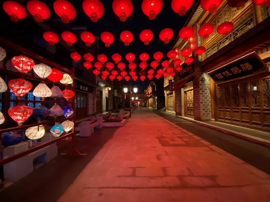

不能奔赴抗疫一线，普通人可以做什么?
原文链接 备份链接 - 疫 情 之 下 - 只有在这样的特殊时刻，我们才体会到平平常常的日子是多么美好，多么幸福…… ” 疫情爆发得如此迅猛，让所有人始料未及。 己亥年腊月二十九，公历2020年1月23日，我去单位上年前最后一天班，那时我 …

“新冠”肺炎像一把刀子，不仅伤及血肉，更剖开了深入骨髓的病灶。清醒的人们必须发出声音，说出真话。今天来信的作者吴俊宇来自江西宜春。在过去一段时期里，伴随全国经济飞腾的大潮，宜春也创造出一幅繁荣景象。不料疫情到来，小城又仿佛回到原样。

疫情下的“小香港”，终归还是那个小县城
撰文：吴俊宇
上
什么是幸福？什么是生活？什么是价值？我在阿兰·巴迪欧的《何为真正生活》以及乔治·莱文的《世俗主义之乐》里寻觅许久，没有找到答案。
小年前的那段日子我并不好过。每天早上六点在焦虑中自动惊醒，随后便是蓬头垢面、饥肠辘辘地爬起来撰写那些互联网企业的约稿。写完便在“每日优鲜”上点个外卖——连续一周的上午，我都是在南瓜粥、芥菜包、红枣豆浆以及日本草莓中渡过的。
他人看来，我看似自由舒适。整日窝在家里，累了便撸撸猫，在各个企业、城市的活动中穿梭往来。然而市面上的作者被清洗了一波又一波，那些群访也无法真正深入业务本身，生产出的内容价值感有限。行业逼着你往前跑，你只能囫囵吞枣般现学现卖。危机是深重的。情绪无法自拔时，只能跑去小区里，一边听许知远的《十三夜》，一边一圈圈散步。这种生活状态，其实是我们这个圈子的日常——焦虑、焦虑、焦虑，止不住的焦虑。
我见到一位媒体创业者躺在公司通宵。她说自己 27、28 岁的年纪，本是个小姑娘，别人家都在四处玩乐，她却需要肩负起这样的压力。她真正的梦想是带着孩子去美国读书。另一位媒体创业者年初掉光了头发。一问才知，他说自己是十几人的老板，实则是在给员工打工，幸福感很差。他想退回当年一个人的状态。一位朋友说，他捏着鼻子在“油腻局”上穿正装和众人狂欢，只为结识一年的人脉。他真正理想的生活是，旅居记录他人的生活状态。他希望 40 岁之后能过上这种日子。
我想起了人类学家项飙那个“工作洞”理论。他用此阐述“追求成功激情”的无意义——我今天做的东西确实没什么价值，也不是我真正想做的。但是我以后会做这个那个。先把手头这个咬牙忍过去，今后回来我就好好过生活。既然眼前这个火坑离我最近，也许能捞到第一桶金，跳进去再说。
然而项飙直接指出：这个“以后好好过”，是个自欺欺人的谎言。是啊，当下都过不好，遑论未来。一次和滴滴专车司机聊天，那是一位头发梳得笔挺、一身黑色保暖夹克的中年大叔。他说靠包政府工程赚了两千万。三十之后庸庸碌碌，天天喝酒攒局唱歌，不着家也不管孩子。酒喝得挺辛苦，歌唱得挺辛苦，钱也赚得挺辛苦。一晃时间没了，十年像是两三年。三十岁前的日子历历在目，恰日昨日。人到四十拼劲没了，只想开专车好好休息。他的儿子不省心，他想求人把他送进政府机构。接下来半辈子得抱着两千万过完，他却满脸倦态没了激情。
如果他还要再活 40 年，这 2000 万每年只能花 50 万。这还是投资不失败、身体不垮掉、通货不膨胀的情况。真把账算清楚，其实挺没意义。我似乎从他身上窥见到了自己人到中年可能会有的无奈。
小年那天，我把几个毫无功利心的朋友组在一起，共同在北京胡同的日料店开怀畅聊了一个夜晚。这顿饭结束后，另一位整日深陷职场复杂人际关系的朋友微信和我说：“有种从淹没的井里爬出来的感觉。”收到这条微信，我感到了温度和回馈。“幸福”、“生活”、 “价值”终究是在人与人的关系，以及日常柴米油盐的体味中建立起来的，而不是一个人离群索居疯狂工作捞金，或为了自己所谓的梦想牺牲家人。那些所谓的“野心”、“成就”，它所带来的价值感其实远低于一家人平平和和坐在一起吃顿晚餐，更低于更合乎人性的选择——毕竟，人性是神性的流露，它是悲悯的结晶。
我似乎摸到了答案的一角。
下
回南方小城那天，发现家乡的机场广告，上面写了三段话：全国综合实力百强县市；中国最具幸福感县级城市；中国最具投资潜力百强县市。我有些嗤之以鼻，尤其是“幸福感”三个字让我深刻怀疑。这种怀疑源于对家乡的叛逆。
但晚上和母亲散步时，我发觉我似乎错了。一年没回家，我竟成了旅游区的群众。老城中心被改造成了“三皇里”，取名源于“三皇宫”——一座始建于清光绪十三年，公元 1887 年，却被当地居民冷落多年的宫庙。
城市商业中心已经悄然转移。90 年代的“小香港”已经老气横秋，七零八落，曾经的山寨洋品牌纷纷关张。旧城改造出的“三皇里”商业区则是一片仿古建筑，里面挤满了年轻人，充斥着汉服店。回到 2010 年左右，这座小城还曾兴起过一座名为“曼哈顿”的商业中心。三个商业中心都只相距一公里。从“小香港”到“曼哈顿”再到“三皇里”，人潮涨落，每一公里都是新时代对旧时代的修正逆反。
“三皇里”商业区门口在举办“网红美食节”。这里聚集了北京、天津、重庆、四川、湖南、内蒙、香港等地的“特色小吃”。商业区内部则按标准的“景区模式”搭建了各式店铺。其中是 made in 义乌的各式小商品，还有 cook in 江西的各式餐饮。整个街道张灯结彩，人来人往，人们脸上挂着春节返乡的喜悦，商业区里甚至出现了街拍的老年人。

我不想用社会学视角去评价所谓的“网红美食节”，也不想细究城市商业中心改名究竟意味着何种社会思潮的涌现。仅从庸常生活的视角去看——一座小县城突然呈现出了小都市的景象。这种祥和的氛围，上次遇见还是在台北和成都。乍眼一看，家乡确也恍然有了几分台北、成都的闲适幸福。然而，我和母亲散步时闲聊，忧虑这波春节返乡热潮后，它还能不能撑住。因为影子终究是影子，它缺乏真实生活的支撑。毕竟城市不是建筑，而是人构成的。
我的怀疑一语成谶，甚至还要更糟。黑天鹅降临，疫情来了。
正月初三那天，我走出家门，发现“小香港” “三皇里”所有店铺都紧闭大门。疫情爆发前摩肩接踵的画面被现在的空无一人所取代。

而在往年，“小香港”是整座城市最繁荣之处，返乡的年轻人在奶茶店、咖啡厅里高谈阔论、打牌聊天。“三皇里”还有家年前人满为患的音乐酒馆，此刻却紧密大门。门口贴了两则通知，一则在大红纸上写着“遵循以人为本的人性化管理理念……在春节期间给全体员工放假……初三正常上班”，下面落款是“消愁音乐酒馆”。另一则是个有关疫情防控的“紧急通知”。A4 白纸上写道，“自 1 月 26 日（正月初二）起全面暂停营业，禁止举办聚会宴请，开业时间另行通知”，落款是市场监督管理局以及冷冰冰的公章。

红白纸一线之隔，荒诞不堪。真不知道这家酒馆的老板春节在家是否需要借酒消愁。
我无法想象那些店铺背后的家庭正在遭遇怎样的焦虑。他们或许省吃俭用攒出十几万盘下一个店铺，只想在春节返乡潮中挣上一笔，然而期望戛然而止。这是线下实体门店的灭顶之灾。各行各业全部停转，只剩下超市、便利店还在勉强营业。我已经在想，一季度社会消费品零售总额到底会降到何种程度。
互联网公司在春节的转速依旧极快，大公司可以凭借自身的资源和效率给疫区做些公益，一些中小公司也不甘示弱，开始“蹭热点”，蹭完之后便是找媒体做传播。我对这种传播保持着疏离和警惕。它似乎是某种向上汇报的“表功”，看上去似乎是在做公益，但却又和疫情本身离得很远。这种行为也让一部分员工反感，在舆论场上引发了危机，公关部门又不得不捏着鼻子去删帖。
一批公司在做公益的同时开始推业务、拉流量。用一个朋友的话来说，这是场“比做广告划算多了”的商业机遇，接下来接比拼的是运营、留存、转化能力。创业媒体都在疯了一般抢热点，选题从疫情对宏观经济、细分行业、具体公司的影响，再到商业故事、人物故事、观点评论。这恐怕就是罗振宇常说的“小趋势”和“躬身入局”吧。
一家名为“深响”的互联网创业媒体在《肺炎疫情下的中国互联网“996”》一文中写道：“程序员、产品经理、运营、市场，以及客服、快递员、外卖员、网约车司机们，职责各不相同，但所有人都在为争取同一场胜利而忙碌。”嗯，胜利。春节本该是阖家欢乐的时候，疫情来袭也本该是休养生息的时候。此时看见某些企业却为了“胜利”打着赈灾的幌子开足马力、伤筋动骨般往前冲。
一位被动“996”的朋友和我说，这次事件中，企业员工被绑架了。她希望既要允许有人怀着或挣钱或天真的想法参与加班，也要允许有人怀着怕死或懒惰的想法拒绝加班。这个春节她原本打算休息，然而却再度因为是非对错等诸多问题陷入焦虑。
也许是我的慵懒和厌倦。我既不想捕捉所谓的“小趋势”，更不愿“躬身入局”。我彻底拒绝了所有企业春节营销和疫情营销的约稿。不是因为我多高尚，而是一年没回家，我希望在假期好好陪陪父母。毕竟几个月前母亲刚从走出抑郁症。当时同样也罹患抑郁的我知道那种感受有多无助。那时我身在北京，电话那端无能为力。现在我能做的，只有假期多陪陪她。
疫情这段日子，一家人被关在一起。两代人的“强制亲密接触”引发了众多摩擦。这些磕磕绊绊却是生活本身。
在春节前，父母最初对疫情毫无知觉。父亲一度极为嚣张地表示，“当年非典照样不慌，一身正气不怕病毒”。我建议取消今年春节的聚餐、拜年活动，结果被教训“过度恐慌，没有亲情”。我沉默了。选择间歇式转发人民日报、央视新闻以及钟南山劝阻。在十几条微信消息的狂轰滥炸下，他才逐渐意识到了问题的严重性。
两代人的沟通障碍在疫情中展现得淋漓尽致。他似乎更相信权威和经验，而不相信下一代的判断力。毕竟，在重大家庭问题上被下一代所摆布，那意味着自己真的老了。
他大概依旧希望在我面前保持他的权威。这是父亲对儿子的权威。然而两代人的力量此消彼长，他无法左右我的人生道路时，只能在那些细枝末节上“用力过猛”。比如，疫情扑朔迷离之际，我到底该何时返京。我和他在这个问题上起了巨大争执，口角之中我说“无法沟通”，他沉默了。那刻我有些后悔说出这种狠话。因为我知道他那种不容置疑的语气是他表达爱意的方式。
一个午休之后，我和母亲聊起一个笑话，惹得她哈哈大笑。她说你在家我心情愉悦，要是这次你不在家，看着那些疫情新闻，我恐怕又要抑郁。我知道母亲善良心软，当年汶川地震，她总被那些悲伤的新闻触动，时常情绪沉重。她话音刚落，我便决定改签之后的航班回京。爱需要表达的艺术，感性的表达远比理性的计算来得有温度。而这也是我需要不断学习的部分。
在家这段时间，我和母亲有意避开了疫情消息。俩人每晚必看江苏卫视的《新相亲大会》，两代人坐在一起交流婚恋观念。这是过去不常有的经历。在这个传统保守的家庭，我们总是羞于表达，很多事情点到为止。
我喜欢《世俗主义之乐》致谢那章中的一段话：“他把每一次吃冰淇淋的时间和每一次散步都化为严肃而富有成果的讨论。”我羡慕那种能够在日常散步、饮食、交谈之中把知识和实践融合得很好的人，也更向往那些极为温暖、精确、娓娓道来的东西。这些日常生活的瞬间，其实就是疫情中的世俗主义之乐吧。
这些天我翻开了彼得·沃森《二十世纪思想史：从弗洛伊德到互联网》。书里记载，众多德语国家里，科学家和伪科学家、哲学家和伪哲学家、知识分子和伪知识分子都在争取公众关注的斗争中试图压过对方。
这场疫情中的舆论博弈同样也是如此。每天在社交媒体上的声音如同协奏曲。大弦嘈嘈如急雨，小弦切切如私语。每一种言论都代表了一种思潮。思潮与思潮之间相互交织博弈，各种思潮的力量随着现实环境的变迁此消彼长，它们共同激荡出了当下社交媒体的基本舆论场。我们在批判，我们在感动，我们在愤怒，我们在嘲笑，我们似乎在参与一场狂欢，似乎又远离真实世界。
想起了一年前自己写过的一段文字：“每个时代都有每个时代的醉生梦死、懦弱胆小、心怀不满和暗自嘲讽。苏联人是躲在厨房里，美国白领是躲在酒吧里，中国人可能就是在社交媒体上。”
我们以为自己在改变什么，然而我们什么都没有改变。生活总还是在按照它的逻辑进行。不管疫情存在与否。
无聊的日子，我在阳台上用具备长焦镜头的手机捕捉到了这样一幕。这是“三皇里”一街之外一片绿色防尘网所覆盖的废墟。废墟下埋藏着这座小城过去几十年的街巷、工厂。废墟之上则是一棵棵孤零零的树、随意倾倒的生活垃圾，还有附近居民用碎砖在废墟之上圈出的一片菜园。

一群憋疯了的赌徒在阳光灿烂的初五搬出了牌桌，在废墟上聚众赌博。旁边是围观的老人、孩子以及小狗。他们津津有味，成了我目所能及的风景。
如果没有疫情，他们照样赌博，只是不戴口罩。仅此而已。小城终究是小城。即使空有成都、台北某些地段的外壳，文明程度依旧远远无法企及。这片废墟以及废墟上人的精神生活，才是小城的底色。
2 月 1 日于江西宜春

自征文以来，我们收到了大量来稿，如实写下了他们在疫情期间的所见所闻，这会是一份真挚而沉重的纪录，我们会留存它。
投稿邮箱：anonymous@owspace.com

点击小程序下单，购买最新上市的《单读 23 · 破碎之家：法国文学特辑》
原文链接 备份链接 - 疫 情 之 下 - 只有在这样的特殊时刻，我们才体会到平平常常的日子是多么美好，多么幸福…… ” 疫情爆发得如此迅猛，让所有人始料未及。 己亥年腊月二十九，公历2020年1月23日，我去单位上年前最后一天班，那时我 …
原文链接 备份链接 凤凰新闻客户端 凤凰网在人间工作室出品 我是一名普通心理咨询师，在武汉有一家心理工作室。我也是一名心理工作志愿者，长期服务于武汉一家三甲医院的危机干预热线工作组。1月24日，大年除夕，工作组取消休假，恢复接听，30几位 …
原文链接 备份链接 **抗疫时期的中国舆论场继续展示着复杂性，并且是以一种更加被凝视的方式。 ** 除夕当夜极大的情绪压力释放之后，从第二天（1月25日）开始，整体舆论场趋向稳定和积极：“第一舆论场”的焦点在于可控的整体局面，积极的防疫行 …
原文链接 备份链接 一场疫情，把不少企业的节奏打乱，旅游业首当其冲。 两三天从高峰跌到低谷，不少企业主称无法作出反应。有民宿老板为春节多买一个冰柜，购置大量鸡鸭、鲜奶；有企业从早到晚开会，讨论春节高峰的应对……这些忙碌的横切面都矗立在1 …
原文链接 备份链接 今年的年味被消毒水的气味尽数冲淡，人们不再热热闹闹地走亲访友，而是躲在口罩和猫眼后紧张地提防着每一个擦肩而过的人，彼此都将对方当成移动的病毒源。 旅行取消，机酒退订，期待已久的海外演唱会一排门票低价转手，「在家隔离」 …